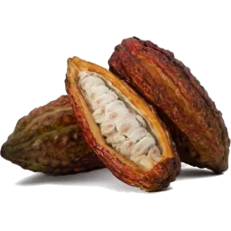
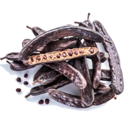
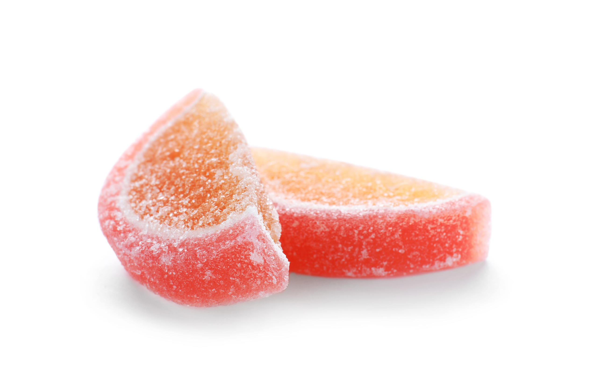
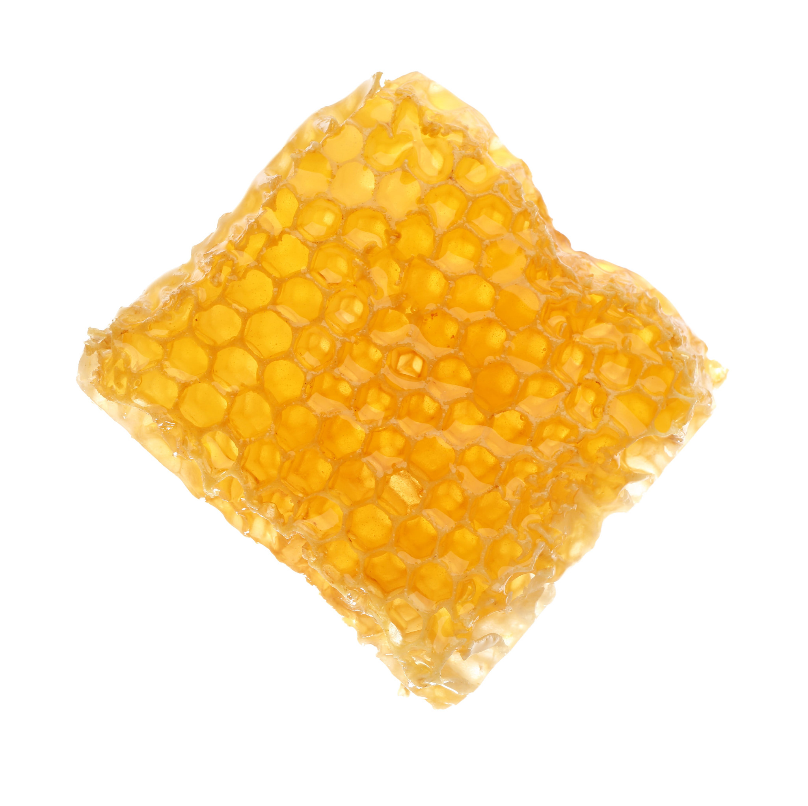
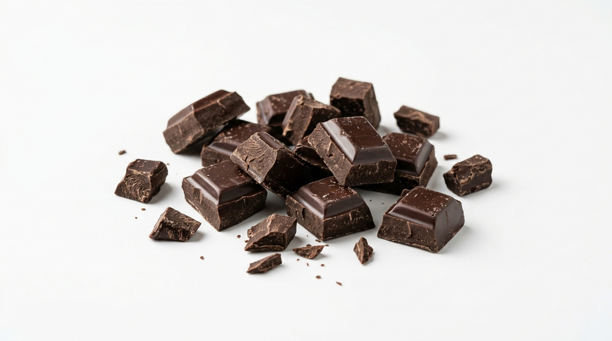

Our produce,
the worlds finest.
We sell all kinds of fruit depending on what's in season, contact us to ask about availability of a specific fruit!
Exotic Fruits
Discover fruits from around the world, from common favourites with exotic twists
to rare and unusual varieties with familiar tastes, all carefully selected for their
quality, freshness and flavour. We have a range of fruits that you simply won't find
in an ordinary greengrocer, with new and unusual varieties arriving throughout the year.
Our selection follows the seasons and the availability of the very best produce from
growers and suppliers across the globe.
From creamy durian and fragrant Buddha's Hand to extremely sweet yellow pitaya,
intensely aromatic rambutan and immensely sour curuba passion fruit, every fruit has
its own character, flavour and story. Some are prized for their sweetness, some for
their acidity, and others for flavours and textures that are almost impossible to
compare to anything more familiar. We love finding fruits that give our customers
something genuinely new to discover.
Our exotic fruit selection isn't simply about finding the strangest fruits we can.
We look for exceptional varieties from the places where they grow best.
Whether you're looking to try something completely new, searching for a particular fruit,
recreating a recipe from abroad, or simply interested to find out what's in season,
there's always something worth exploring. Some fruits are seasonal rarities that may only
appear for a short time, while others return throughout the year. If you've never tried
something before, our team can also help you choose; because sometimes the most unusual
fruit turns out to be your new favourite.


Japanese
In Japan, gifting fruit is a deeply rooted tradition expressing high respect and gratitude.
These fruits are hand-grown with meticulous care to achieve flawless shapes, perfect sweetness and uniform colouring.
They are elegantly boxed and presented like fine jewellery or vintage wine.
It's always such a pleasure seeing customers go from unconvinced to
completely in awe after trying our Pione Grapes.
No need to go to Harrods, we have a selection of highly sought after Japanese luxury fruits right here!
From Crown melons selling at £115 each to Miyazaki mangoes – a pair of which sold at auction for £4,000.
Read about our Japanese fruits
here,
or read short summaries below.
The Crown Melon is a hand-massaged, single-stem musk melon grown in Hokkaido or Shizuoka,
famous for its perfectly round shape and rich melt-in-your-mouth sweetness.
The Pione Grape is highly prized in Japan, frequently gifted in elaborate, cushioned boxes.
The Miyazaki Mango also known as Taiyo no Tamago meaning Egg of the Sun,
is a ruby-red mangoes, classified by hitting a strict weight and sugar thresholds.
It is highly prized for its intensely sweet,
almost candy-like flavour, completely fibreless flesh, and a creamy, melting texture.
The Fuyu Persimmon is a traditional autumn fruit given for its crisp, sweet and non-astringent flesh.


Organic
Alongside our fresh fruit and vegetables, we also stock a selection of organic products from around the world, chosen for their quality, flavour and individuality. You'll find everything from organic juices and creamy butter to naturally sweet dates, rich olives and fresh eggs, with the range changing regularly depending on our customers' requests and the season. These are the sorts of products that make a kitchen more interesting; whether you're looking for something for breakfast, an ingredient for cooking, a refreshing juice or simply something delicious to take home and try. We believe the smaller things in your kitchen deserve just as much attention as the main ingredients. It's a constantly changing collection, and one of our favourite places to find something unexpected.


Naughty Corner
Not everything in the shop has to be good for you! Our Naughty Corner is where you'll find the sweeter side of The Greengrocer, packed with fruity treats, indulgent snacks and little things that are far too tempting to leave behind. From chocolate or caramel flavoured fruits and beautifully made fruit jellies to crunchy banana chips, honeycomb and other sweet treats, this is the place to come when you're looking for something a little more indulgent.





Mangoes
Mangoes are one of the world's most diverse fruits, with hundreds of varieties grown across tropical and subtropical regions. From intensely sweet and creamy varieties to fragrant, tangy and fibreless mangoes, each cultivar has its own distinctive character. We source a wide selection from around the world, bringing together some of the most interesting and sought-after mangoes in one place. Whether you prefer a rich, honey-like sweetness, a delicate floral aroma or a more traditional tropical flavour, there is a mango for every palate. Some mangoes we sell depending on season include: Amrapali, Anwar Ratol, Apple, Ataulfo, Banana, Bangapalli, East Indian, Green, Haden, Julie, Kent, Langra, Rose-Shaped Dried, Shelly, Sugar, TJC and Vilad mangoes! For an even more extensive list detailing individual mangoes and their seasonality and flavour, check our online store .


Our fruits
Guaranteed to
supply to your taste
Our team can suggest fruits based on your preferences, whether you enjoy sweet, sour, tropical, or unusual flavours. We have fruits fitting every flavour profile imaginable. Each visit is an exciting new encounter with interesting new exotic fruits.

Online shop
My Exotic Fruit

Questions
Answered here